SELF-INSTRUCT：利用自行生成的指令对齐语言模型
♣华盛顿大学 ♢德黑兰理工大学 ♡亚利桑那州立大学
♠约翰斯·霍普金斯大学 +Allen 人工智能研究所
yizhongw@cs.washington.edu
摘要
经过“指令微调”的大型语言模型（即经过微调以响应指令的模型），已经展现出以零样本方式泛化到新任务的非凡能力。然而，它们严重依赖人工编写的指令数据；这些数据的数量、多样性和创造性往往有限，因此限制了微调后模型的通用性。我们提出 SELF-INSTRUCT，这是一个利用预训练语言模型自身的生成结果进行自举、以提升其指令遵循能力的框架。我们的流程先用语言模型生成指令、输入和输出样本，再过滤无效或相似的样本，最后用这些样本微调原始模型。将这一方法应用于未经指令微调的 GPT3 后，我们在 SUPERNATURALINSTRUCTIONS 上获得了相对于原始模型 33% 的绝对提升，达到使用私有用户数据和人工标注训练的 InstructGPT0011 的性能水平。为了进一步评估，我们整理了一组由专家编写、面向新任务的指令；人工评估表明，用 SELF-INSTRUCT 微调 GPT3 的效果大幅超过使用现有公开指令数据集的效果，与 InstructGPT001 仅有 5% 的绝对差距。SELF-INSTRUCT 提供了一种几乎无需标注、即可使预训练语言模型对齐指令的方法；我们还发布了大型合成数据集，以促进今后对指令微调的研究。2
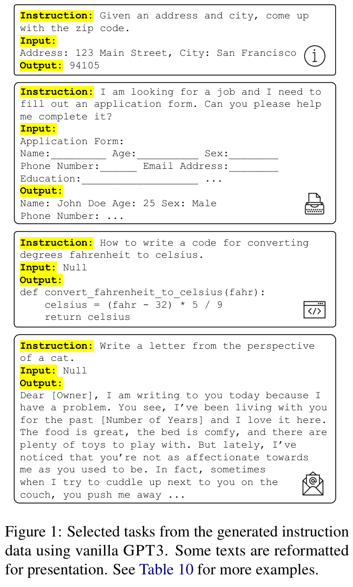
1 引言
近期 NLP 文献中，构建能够遵循自然语言指令的模型的研究非常活跃（Mishra et al., 2022; Wei et al., 2022; Sanh et al., 2022; Wang et al., 2022; Ouyang et al., 2022; Chung et al., 2022 等）。这些进展由两个关键要素推动：大型预训练语言模型（LM），以及人工编写的指令数据（例如 PROMPTSOURCE（Bach et al., 2022）和 SUPERNATURALINSTRUCTIONS（Wang et al., 2022，简称 SUPERNI））。然而，收集这样的指令数据成本高昂，而且多样性往往有限，因为人工生成的内容大多倾向于常见的 NLP 任务，无法覆盖真正丰富的任务以及描述这些任务的不同方式。（接续下一页）
1 除非另有说明，我们的比较均使用 text-davinci-001 引擎。我们重点研究这一引擎，因为它与我们的实验设置最接近：利用人工示范进行监督微调。更新的引擎能力更强，但它们使用了更多数据（例如代码或最新的用户查询），或使用了难以直接比较的算法（例如 PPO）。
2 代码和数据见 https://github.com/yizhongw/self-instruct。
第 61 届计算语言学协会年会论文集，第 1 卷：长论文，页码 13484–13508。2023 年 7 月 9–14 日。© 2023 计算语言学协会。
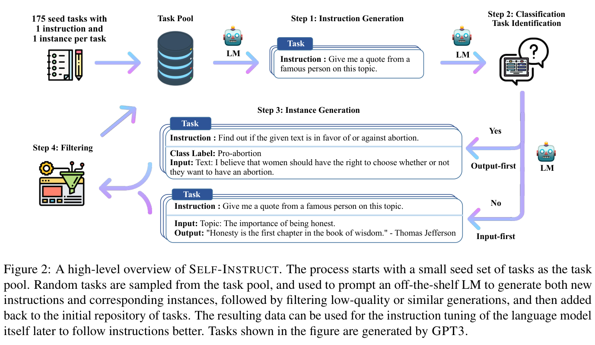
（接续上一页）要继续提升指令微调模型的质量和覆盖范围，就必须开发替代方法，为指令微调过程提供监督。
本文提出 SELF-INSTRUCT，这是一种半自动流程，使用来自预训练 LM 自身的指令信号，对该模型进行指令微调。整个流程是一个迭代自举算法（见图 2）：首先使用少量人工编写的种子任务（本研究中为 175 个），指导整体生成。在第一阶段，通过提示模型，为新任务生成指令。该步骤利用已有指令集合，创造覆盖面更广、用于定义任务（通常是新任务）的指令。得到新生成的指令集合后，框架还为它们创建输入—输出实例，供后续指令微调使用。最后，利用多种启发式规则自动过滤低质量或重复的指令，再把剩余的有效任务加入任务池。这一过程可以重复迭代多次，直到得到大量任务。
为了对 SELF-INSTRUCT 进行实证评估，我们在未经指令微调的语言模型 GPT3（Brown et al., 2020）上运行该框架（§3）。在该模型上进行迭代 SELF-INSTRUCT，得到约 52k 条指令，以及与之配对的约 82K 个实例输入和目标输出。图 1 中的例子表明，所得数据提供了丰富多样、具有创造性的任务。这些生成的任务偏离典型 NLP 任务的分布，而且与种子任务的重叠相当小（§3.2）。我们使用这些数据微调 GPT3，得到 GPT3SELF-INST（即微调的模型与用于生成指令数据的模型相同）。我们将 GPT3SELF-INST 与其他多种模型进行比较，评估既涵盖 SUPERNI（Wang et al., 2022）中的典型 NLP 任务，也涵盖一组为了探索指令遵循模型的新用途而创建的新指令（§4）。结果表明，GPT3SELF-INST 大幅超越原始 GPT3（+33.1%），并几乎达到 InstructGPT001 的性能。此外，我们对新创建指令集的人工评估表明，GPT3SELF-INST 展现出广泛的指令遵循能力，优于使用其他公开指令数据集训练的模型，与 InstructGPT001 仅相差 5%。
我们的贡献概括如下：（1）提出 SELF-INSTRUCT，一种用极少人工标注数据诱导指令遵循能力的方法；（2）通过广泛的指令微调实验验证其有效性；（3）发布包含 52K 条指令的大型合成数据集，以及一组人工编写的新任务，用于构建和评估未来的指令遵循模型。
2 方法
人工标注大规模指令数据可能很困难，因为这需要：（1）提出新任务的创造力；（2）为每个任务编写解决方案的专业知识。下面详细介绍 SELF-INSTRUCT 的流程：利用未经指令微调的预训练语言模型自身生成任务，过滤生成数据，然后使用生成数据进行指令微调，使 LM 对齐为更好地遵循指令。该流程见图 2。
2.1 定义指令数据
我们要生成的指令数据包含一组指令 \(\{I_t\}\)，每条指令用自然语言定义一个任务 \(t\)。任务 \(t\) 有 \(n_t\geq1\) 个输入—输出实例 \(\{(X_{t,i},Y_{t,i})\}_{i=1}^{n_t}\)。给定任务指令及对应输入，模型 \(M\) 应产生输出：\(M(I_t,X_{t,i})=Y_{t,i}\)，其中 \(i\in\{1,\ldots,n_t\}\)。注意，在许多情况下，指令与实例输入之间没有严格边界。例如，“写一篇关于校园安全的文章”可以是一条有效指令，我们期望模型直接作答；它也可以表述为指令“写一篇关于以下主题的文章”，并以“校园安全”作为实例输入。为了鼓励数据格式的多样性，我们允许这种不需要额外输入的指令（即 \(X\) 为空）。
2.2 自动生成指令数据
我们的数据生成流程包含四步：（1）生成任务指令；（2）判断指令是否表示分类任务；（3）采用输入优先或输出优先的方法生成实例；（4）过滤低质量数据。
指令生成。第一步，SELF-INSTRUCT 以自举方式，从少量人工编写的种子指令生成新指令。我们以 175 个任务初始化任务池（每个任务包含 1 条指令和 1 个实例）。3 每一步都从池中采样 8 条任务指令，作为上下文示例。这 8 条指令中，6 条来自人工编写的任务，2 条来自此前步骤中模型生成的任务，以促进多样性。提示模板见表 5。
分类任务识别。由于分类任务和非分类任务需要采用两种不同方法，接下来我们判断生成的指令是否代表分类任务。4 我们以少样本方式提示 LM 进行判断，使用种子任务中的 12 条分类指令和 19 条非分类指令。提示模板见表 6。
实例生成。给定指令及其任务类型，我们为每条指令独立生成实例。这具有挑战性，因为模型需要根据指令理解目标任务，确定并生成所需的额外输入字段，最后通过产生输出完成任务。我们发现，当使用其他任务的“指令—输入—输出”上下文示例进行提示时，预训练 LM 在很大程度上可以做到这一点。一种自然的方法是输入优先方法：要求 LM 先依据指令构造输入字段，再产生对应输出。这一生成顺序类似于模型通常响应指令和输入的方式，但这里使用的是其他任务的上下文示例。提示模板见表 7。
然而，我们发现这种方法可能生成偏向某一标签的输入，尤其是在分类任务中（例如，检测语法错误时，通常会生成语法正确的输入）。因此，我们进一步为分类任务提出输出优先方法：首先生成可能的类别标签，再以每个类别标签为条件生成输入。提示模板见表 8。5 我们对前一步识别出的分类任务采用输出优先方法，对其余非分类任务采用输入优先方法。
3 这些任务由作者及其在 UW 的实验室同事新编写，未参考现有数据集或本文使用的测试集。附录 §A.1 提供这些任务的更多细节，并分析它们与测试任务的相似性。
4 更具体地说，我们将输出标签空间较小且有限的任务视为分类任务。
5 本文使用固定的种子任务集合来提示实例生成，因此每轮只为每个任务生成少量实例。未来工作可以使用随机采样的任务作为提示，在多轮中让模型生成更多实例。
过滤与后处理。为了促进多样性，只有当新指令与任何已有指令的 ROUGE-L 相似度都小于 0.7 时，才将其加入任务池。我们还排除包含特定关键词（例如 image、picture、graph）的指令，因为 LM 通常无法处理这些内容。为每条指令生成新实例时，我们过滤完全相同的实例，以及输入相同但输出不同的实例。通过启发式规则识别并过滤无效生成结果，例如指令过长或过短、实例输出只是重复输入。
2.3 微调 LM 以遵循指令
创建大规模指令数据后，我们使用这些数据微调原始 LM（即 SELF-INSTRUCT）。为此，将指令与实例输入拼接成提示，并以标准监督学习方式训练模型生成实例输出。为使模型对不同格式具有稳健性，我们使用多个模板共同编码指令与实例输入。例如，指令前面可以带有或不带有“Task:”，输入前面可以带有或不带有“Input:”，提示末尾可以附加或不附加“Output:”，中间也可以放置不同数量的换行等。
3 来自 GPT3 的 SELF-INSTRUCT 数据
本节将我们的指令数据诱导方法应用于 GPT3，作为一个案例研究。我们通过 OpenAI API6 使用最大的 GPT3 LM（“davinci”引擎）。查询参数见附录 A.2。下面介绍生成数据的概况。
3.1 统计信息
表 1 描述生成数据的基本统计信息。经过过滤，我们总共得到超过 52K 条指令，以及与这些指令对应的超过 82K 个实例。
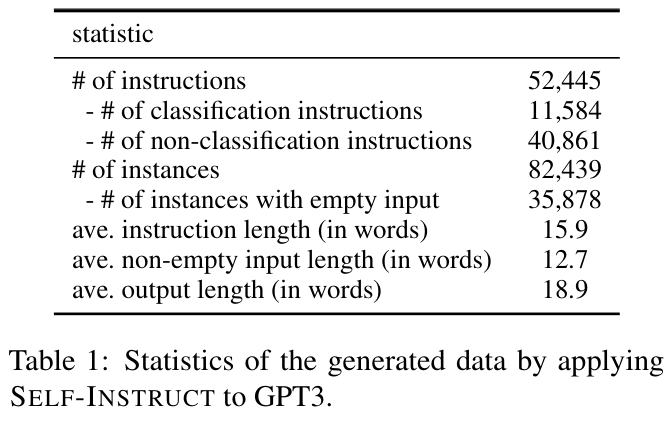
3.2 多样性
为了研究生成了哪些类型的指令、它们的多样性如何，我们识别生成指令中的动词—名词结构。我们使用 Berkeley Neural Parser7（Kitaev and Klein, 2018; Kitaev et al., 2019）解析指令，再提取最接近根节点的动词及其第一个直接名词宾语。52,445 条指令中有 26,559 条包含这种结构；其他指令通常包含更复杂的从句（例如，“判断这条推文是否包含政治内容。”），或者以问题形式表述（例如，“这些陈述中哪些是真的？”）。图 3 展示最常见的 20 个根动词及各自最常见的 4 个直接名词宾语，它们占整个集合的 14%。总体来看，这些指令的意图和文本格式相当多样。
我们进一步研究生成的指令与用于提示生成的种子指令有何不同。对于每条生成指令，我们计算它与 175 条种子指令的最大 ROUGE-L 重叠程度，并在图 4 中绘制这些 ROUGE-L 分数的分布。结果表明，生成了相当数量与种子重叠不多的新指令。图 5 还展示指令、实例输入和实例输出在长度方面的多样性。
3.3 质量
目前我们已经展示生成数据的数量和多样性，但其质量仍不确定。为研究这一点，我们随机采样 200 条指令，并为每条指令随机选择 1 个实例。我们请一位专家标注者（本文作者）从指令、实例输入、实例输出三个方面，标注每个实例是否正确。表 2 的评估结果表明，大多数生成指令是有意义的，而生成实例可能含有更多噪声，但仍在合理程度内。不过，我们发现，即使生成结果存在错误，大部分仍具有正确格式，或至少部分正确，能够为训练模型遵循指令提供有用指导。我们在（接续下一页）
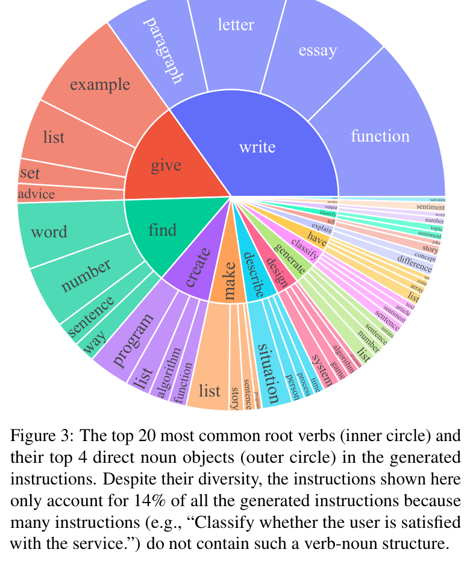
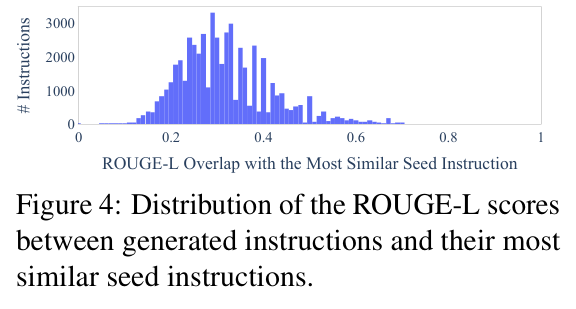
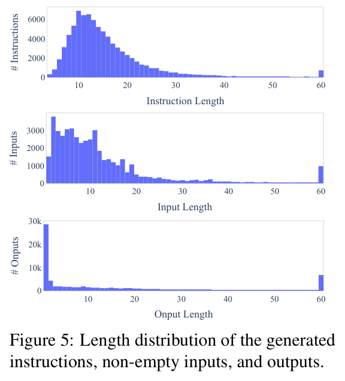
（接续上一页）表 10 和表 11 中分别列出若干好的例子与不好的例子。
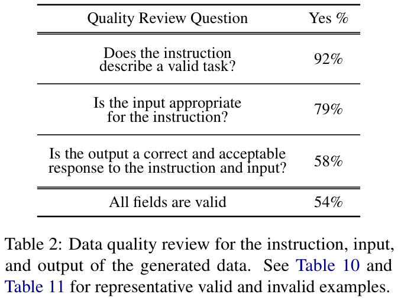
4 实验结果
我们开展实验，衡量并比较模型在各种指令微调设置下的性能。首先介绍我们的模型与其他基线，随后介绍实验。
4.1 GPT3SELF-INST：使用 GPT3 自己的指令数据微调 GPT3
给定生成的指令数据，我们对 GPT3 模型自身（“davinci”引擎）进行指令微调。如 §2.3 所述，我们使用各种模板拼接指令和输入，并训练模型生成输出。微调通过 OpenAI 微调 API8 完成。我们使用默认超参数，但将提示的损失权重设为 0，并训练模型 2 个 epoch。其他微调细节见附录 A.3。所得模型记为 GPT3SELF-INST。
4.2 基线
现成 LM。我们将 T5-LM（Lester et al., 2021; Raffel et al., 2020）和 GPT3（Brown et al., 2020）作为未经指令微调的 LM 基线（仅经过预训练，没有额外微调）。这些基线将表明，现成 LM 在预训练刚完成时能够自然遵循指令的程度。
公开的指令微调模型。T0 和 Tk-INSTRUCT 分别是 Sanh et al.（2022）与 Wang et al.（2022）提出的两种指令微调模型，已被证明能够遵循许多 NLP 任务的指令。这两个模型都从 T5（接续下一页）
8 参见 OpenAI 关于微调的文档（原文链接）。
（接续上一页）（Raffel et al., 2020）checkpoint 微调而来，并已公开发布。9 对这两个模型，我们都使用其最大的 11B 参数版本。
经过指令微调的 GPT3 模型。我们评估 InstructGPT（Ouyang et al., 2022），它由 OpenAI 基于 GPT3 开发，旨在更好地遵循人类指令；社区发现其零样本能力非常出色。这些模型有多个代际，较新的版本使用范围更广的数据或新的算法。10 在 §4.3 的 SUPERNI 实验中，我们仅比较其 text-davinci-001 引擎，因为更新的引擎使用最新用户数据训练，很可能已经见过 SUPERNI 测试集。为了完整起见，在对新编写指令进行人工评估时，我们纳入其 001、002 和 003 引擎。
此外，为比较 SELF-INSTRUCT 训练与其他公开指令微调数据的效果，我们还使用 PROMPTSOURCE 和 SUPERNI 数据进一步微调 GPT3 模型；这些数据分别用于训练 T0 和 Tk-INSTRUCT 模型。我们分别将其简称为 T0 training 和 SUPERNI training。为了节省训练预算，我们从每个数据集中采样 50K 个实例（但覆盖它们的全部指令），使其规模与我们生成的指令数据相当。根据 Wang et al.（2022）的发现和我们早期的实验，减少每个任务的实例数量不会降低模型对未见任务的泛化性能。
4.3 实验 1：在 SUPERNI 基准上的零样本泛化
我们首先以零样本方式评估模型在典型 NLP 任务中遵循指令的能力。我们使用 SUPERNI（Wang et al., 2022）的评估集，其中包含 119 个任务，每个任务有 100 个实例。本文主要关注零样本设置，即仅用任务定义提示模型，不提供上下文示范例子。对 GPT3 各变体的所有请求，我们都采用确定性生成模式（temperature 为 0，不采用 nucleus sampling），且不指定停止序列。
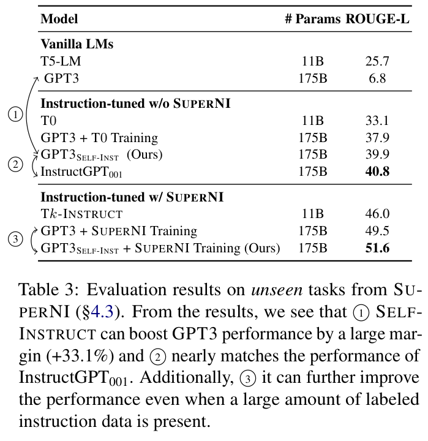
结果。从表 3 的结果中，我们得到以下观察。SELF-INSTRUCT 大幅提升 GPT3 的指令遵循能力。未经指令微调的 GPT3 基本完全无法遵循人类指令。人工分析发现，它通常生成不相关、重复的文本，也不知道何时停止生成。与其他并非专门针对 SUPERNI 训练的模型相比，GPT3SELF-INST 的性能优于 T0，也优于在 T0 训练集上微调的 GPT3；后者需要大量人工标注工作。尤其值得关注的是，GPT3SELF-INST 还几乎达到使用私有用户数据和人工标注标签训练的 InstructGPT001 的性能。在 SUPERNI 训练集上训练的模型，在其评估集上仍然表现更好，我们认为这是因为它们的指令风格与格式相似。不过，我们表明，将 SELF-INSTRUCT 与 SUPERNI 训练集结合后仍能带来额外提升，证明了其作为补充数据的价值。
4.4 实验 2：泛化到新任务中面向用户的指令
尽管 SUPERNI 广泛收集了现有 NLP 任务，但大部分任务是为研究目的提出的，并且偏向分类任务。为了更好地评估指令遵循模型的实际价值，部分作者整理了一组以面向用户的应用为出发点的新指令。我们首先讨论大型 LM 可能有用的各个领域（例如电子邮件撰写、社交媒体、生产力工具、娱乐、编程），然后（接续下一页）
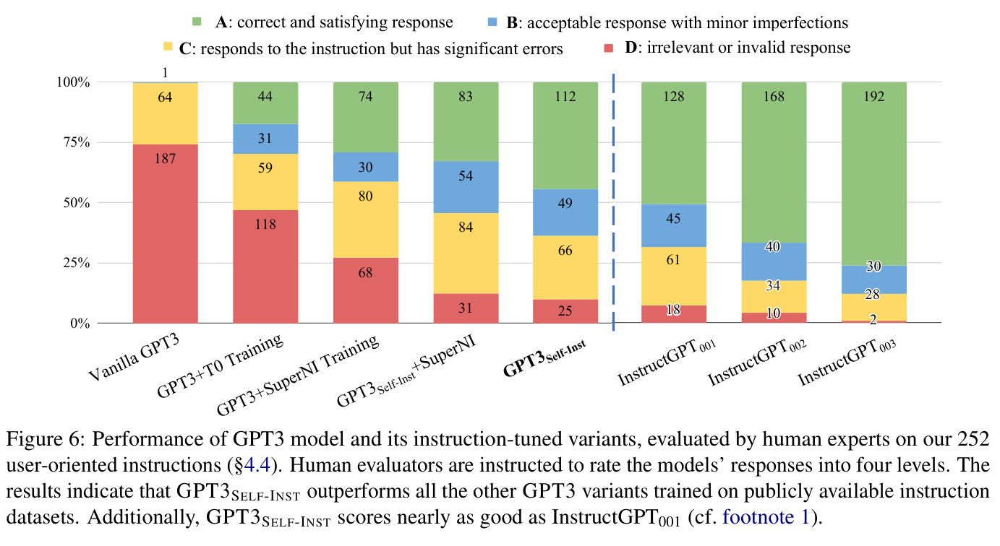
（接续上一页）为每个领域编写相关指令，并配上一个输入—输出实例（同样，输入为可选）。我们力求使这些任务的风格和格式多样化，例如指令可以长或短，输入和输出可以采用项目符号列表、表格、代码、方程等形式。总共创建了 252 条指令，每条指令有 1 个实例。我们认为，这可作为评估指令模型处理多样、陌生指令能力的测试平台。表 9 展示其中一小部分，完整集合见我们的 GitHub 仓库。§A.1 分析该集合与种子指令之间的重叠程度。
人工评估设置。在这个包含多样任务的评估集上评估模型性能极具挑战，因为不同任务需要不同专业知识。实际上，许多任务无法用自动指标衡量，甚至普通众包工作者也无法判断，例如编写程序，或将一阶逻辑转换为自然语言。为得到更可信的评估，我们请指令作者判断模型预测。人工评估的具体设置见附录 B。评估者需要根据输出是否准确、有效地完成任务进行评分。我们实行四级评分系统，对模型输出质量进行分类：
- RATING-A：回答有效且令人满意。
- RATING-B：回答可接受，但有轻微错误或不足。
- RATING-C：回答与指令相关，并作出了响应，但内容存在重大错误。例如，GPT3 可能先生成有效输出，却又继续生成其他不相关内容。
- RATING-D：回答不相关或完全无效。
结果。图 6 展示 GPT3 及其指令微调版本在这一新编写指令集上的表现（在四类别评分尺度上，评估者间一致性为 \(\kappa=0.57\)，详见附录 B）。正如预期，未经指令微调的 GPT3 LM 大多无法响应指令，而所有经过指令微调的模型都表现出相对更高的性能。然而，GPT3SELF-INST（即用 SELF-INSTRUCT 微调的 GPT3）大幅超过在 T0 或 SUPERNI 数据上训练的对应模型，表明生成数据虽然包含噪声，仍具有价值。与 InstructGPT001 相比，GPT3SELF-INST 的性能相当接近：如果将存在轻微不足但可接受的回答（RATING-B）算作有效回答，GPT3SELF-INST 仅落后 InstructGPT001 5%。最后，我们的评估证实了 InstructGPT002 和 InstructGPT003 出色的指令遵循能力。尽管这种成功背后有许多因素，我们推测，未来工作可以通过人工标注者或训练奖励模型来选择更好的生成结果，改善我们的生成数据质量，并从中显著获益，这类似于 Ouyang et al.（2022）使用的算法。
4.5 数据规模与质量的影响
数据规模。SELF-INSTRUCT 提供了一种以低成本、几乎无需人工标注的方式扩充指令数据的方法；更多这样的生成数据，是否能带来更好的指令遵循能力？我们从生成的数据集中抽取不同数量的指令子集，在这些子集上微调 GPT3，并在包含 252 条面向用户指令的集合上评估所得模型，以分析生成数据规模的作用。我们采用与 §4.4 相同的人工评估。图 7 展示使用不同规模生成数据微调的 GPT3SELF-INST 模型的性能。总体来看，随着数据规模增长，性能持续提高。不过，这种提升在超过 16K 后几乎进入平台期。这与 Wang et al.（2022，图 5）的数据规模实验一致。有趣的是，在 SUPERNI 上评估时，我们发现模型的性能提升更早就进入平台期，大约只需数百条指令。这可能是因为新生成的数据与 SUPERNI 中的典型 NLP 任务不同，说明未来研究可能通过组合不同的指令数据，在各种任务上取得更好性能。
数据质量。提升模型性能的另一方向是利用我们的生成数据，获得更好的监督信号（减少噪声）。我们使用 InstructGPT003（当时最好的通用模型），根据指令和输入重新生成所有实例的输出字段，以探索这一思路。然后使用这个改进版本的数据微调 GPT3。如图 7 所示，所得模型比使用原始数据训练的对应模型高出 10%；这表明，未来工作有很大空间，可以先用我们的生成流程获得初始数据，再由人类专家或更好模型的蒸馏改善数据质量。
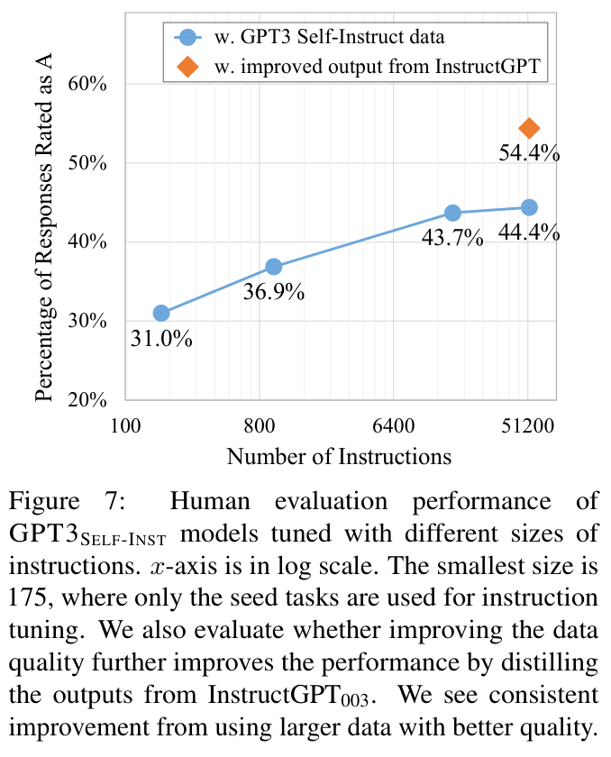
5 相关工作
遵循指令的 LM。一系列研究发现，用人工标注的“指令式”数据微调后，未经指令微调的 LM 可以有效遵循一般语言指令；这些数据集包含自然语言指令命令及其基于人工标注的期望结果（Weller et al., 2020; Mishra et al., 2022; Wei et al., 2022; Sanh et al., 2022 等）。此外，这些研究表明，“指令式”数据的规模、多样性与所得模型对未见任务的泛化能力直接相关（Wang et al., 2022; Chung et al., 2022）。不过，这些进展主要关注现有 NLP 任务，并依赖人工标注指令，因此成为向更具泛化能力的模型迈进的瓶颈（例如，见 Wang et al., 2022 的图 5a）。我们的工作旨在超越经典 NLP 任务，通过预训练 LM 应对创建多样化指令数据的挑战。InstructGPT（Ouyang et al., 2022）同样致力于构建更加通用的 LM，并在遵循多样用户指令方面展现出出色性能。然而，作为商业系统，其构建过程仍相当不透明。尤其是，由于透明度有限，以及研究使用私有用户数据，数据所起的作用仍缺乏研究。应对这些挑战，需要创建一个覆盖广泛任务的大规模公开数据集。
用于数据生成和增强的语言模型。多种研究提出使用 LM 生成数据（Schick and Schütze, 2021; Wang et al., 2021; Liu et al., 2022; Meng et al., 2023），或增强数据（Feng et al., 2021; Yang et al., 2020; Mekala et al., 2022）。我们的工作与这一研究方向的不同之处，在于不针对某个特定任务，例如 QA 或 NLI。相反，SELF-INSTRUCT 的一个独特（接续下一页）
（接续上一页）动机，是自举产生此前 NLP 从业者可能尚未定义的新任务，尽管这些任务对实际用户仍可能很重要。与我们同时开展的工作中，Honovich et al.（2022a）也提出用 GPT3 模型生成大规模指令数据，称为 Unnatural Instructions。主要区别是：（1）他们使用 SUPERNI（Wang et al., 2022）中的任务作为种子任务，因而生成任务的分布不同；（2）他们使用 InstructGPT002 生成数据，从这个意义上说，是从已经经过指令微调的模型蒸馏知识，而我们仅依赖未经指令微调的 LM；（3）具体生成流程与模板不同。尽管如此，我们认为扩充指令数据的这两项工作相互补充，社区将从这些多样数据集中获益。
指令生成。近期一系列研究（Zhou et al., 2022b; Ye et al., 2022; Singh et al., 2022; Honovich et al., 2022b）根据少量例子生成某个任务的指令。虽然 SELF-INSTRUCT 同样涉及指令生成，但我们的主要区别在于不针对具体任务；我们从头生成新任务，即指令及其对应实例。
模型自训练。典型自训练框架（He et al., 2019; Xie et al., 2020; Du et al., 2021; Amini et al., 2022; Huang et al., 2022）使用训练好的模型为未标注数据赋予标签，再利用伪标注数据改进模型。Zhou et al.（2022a）使用多个提示指定同一任务，提出通过提示一致性进行正则化，鼓励模型在各提示下产生一致预测。这既允许利用额外未标注训练数据微调模型，也允许直接在推理时应用。尽管 SELF-INSTRUCT 与自训练文献存在相似之处，大多数自训练方法都假设存在一个特定目标任务及该任务的未标注例子；相比之下，SELF-INSTRUCT 从头产生多种任务。
知识蒸馏。知识蒸馏（Hinton et al., 2015; Sanh et al., 2019; West et al., 2021; Magister et al., 2022）通常涉及从较大模型向较小模型转移知识。SELF-INSTRUCT 也可视为一种“知识蒸馏”，但存在以下区别：（1）蒸馏源与目标相同，即将模型的知识蒸馏给它自己；（2）蒸馏内容采用指令任务的形式，即定义任务的指令，以及具体体现该任务的一组例子。
有限资源下的自举。近期一系列研究使用语言模型，通过专门的方法自举完成某些推断。NPPrompt（Zhao et al., 2022）提供了一种无需任何微调即可生成语义标签预测的方法。它利用模型自身的 embeddings，自动找到与数据样本标签相关的词，从而减少对人工建立“模型预测—标签”映射（verbalizers）的依赖。STAR（Zelikman et al., 2022）迭代利用少量带推理依据的例子和不含推理依据的大型数据集，自举提升模型的推理能力。Self-Correction（Welleck et al., 2023）将不完美的基础生成器（模型）与独立的纠正器解耦；后者学习迭代修正不完美的生成结果，并展现出相对于基础生成器的提升。我们的工作则关注在指令范式下自举产生新任务。
多模态指令遵循。多模态学习文献同样关注指令遵循模型（Fried et al., 2018; Shridhar et al., 2020; Min et al., 2022; Weir et al., 2022）。SELF-INSTRUCT 作为扩充数据的通用方法，也可能对这些场景有帮助；我们将其留待未来研究。
6 结论
我们提出 SELF-INSTRUCT，一种通过 LM 自己生成指令数据，提升其指令遵循能力的方法。在未经指令微调的 GPT3 上进行实验时，我们自动构建了一个包含 52K 条指令、面向多样任务的大规模数据集；使用这些数据微调 GPT3 后，在 SUPERNI 上相对于原始 GPT3 获得 33% 的绝对提升。此外，我们整理了一组由专家编写、面向新任务的指令。对该集合进行人工评估表明，用 SELF-INSTRUCT 微调 GPT3，大幅优于使用现有公开指令数据集，其性能接近 InstructGPT001。我们希望 SELF-INSTRUCT 可以成为使预训练 LM 对齐为遵循人类指令的第一步；未来工作可基于这些数据，进一步改进指令遵循模型。
7 更广泛的影响
除了本文直接关注的问题，我们认为 SELF-INSTRUCT 可能帮助揭示 InstructGPT 或 ChatGPT 等广泛使用的指令微调模型“幕后”发生了什么，使其更加透明。遗憾的是，这些产业模型的数据集没有公开，只能通过 API 访问，因此人们对它们如何构建、为何具有出色能力了解甚少。理解这些模型成功的来源，并努力构建更好、更开放的模型，现已成为学术界的责任。我们认为，本文发现证明了多样化指令数据的重要性；我们的大型合成数据集可以成为获得更高质量数据、构建更好指令遵循模型的第一步。在撰写本文时，已有若干后续研究采纳本文的核心思想，开展此类探索（Taori et al., 2023; Xu et al., 2023; Sun et al., 2023 等）。
8 局限性
下面讨论本工作的若干局限性，以启发这一方向的未来研究。
长尾现象。SELF-INSTRUCT 依赖 LM，因此会继承 LM 的全部局限性。近期研究表明（Razeghi et al., 2022; Kandpal et al., 2022），长尾现象对 LM 的成功构成严峻挑战。换言之，LM 的最大提升对应高频语言用法（语言使用分布的头部），而在低频情境中可能提升很小。同样，在本文情境下，如果 SELF-INSTRUCT 的大部分提升偏向预训练语料中更常出现的任务或指令，并不令人意外。因此，该方法对于少见、富有创造性的指令可能表现脆弱。
对大模型的依赖。由于 SELF-INSTRUCT 依赖从 LM 中提取的归纳偏置，它可能在更大模型上效果最好。若确实如此，这可能为缺乏大量计算资源的人设置使用门槛。我们希望未来研究仔细考察性能收益如何随模型规模或其他参数变化。值得注意的是，使用人工标注的指令微调也存在类似局限：更大模型从指令微调中获益更多（Wei et al., 2022）。
强化 LM 的偏见。作者关心的一点是该迭代算法可能产生的非预期后果，例如放大有问题的社会偏见（关于性别、种族等的刻板印象或侮辱用语）。与此相关，我们在这一过程中观察到的挑战，是算法难以产生均衡标签，这反映了模型原有的偏见。我们希望未来研究能更好地理解这种方法的优缺点。
致谢
作者感谢匿名审稿人提出建设性反馈。我们尤其感谢 Sewon Min、Eric Wallace、Ofir Press，以及 UWNLP 和 AllenNLP 的其他成员，感谢他们的鼓励性反馈和智力支持。本工作得到 DARPA MCS 项目通过 NIWC Pacific（N66001-19-2-4031）、ONR N00014-18-1-2826、ONR MURI N00014-18-1-2670、AI2 资助以及 Allen Investigator 奖的部分支持。
参考文献
Massih-Reza Amini, Vasilii Feofanov, Loic Pauletto, Emilie Devijver, and Yury Maximov. 2022. 自训练：综述。arXiv preprint arXiv:2202.12040.
Stephen H Bach, Victor Sanh, Zheng-Xin Yong, Albert Webson, Colin Raffel, Nihal V Nayak, Abheesht Sharma, Taewoon Kim, M Saiful Bari, Thibault Fevry, et al. 2022. PromptSource：自然语言提示的集成开发环境与仓库。In Annual Meeting of the Association for Computational Linguistics (ACL) - System Demonstrations.
Tom B. Brown, Benjamin Mann, Nick Ryder, Melanie Subbiah, Jared Kaplan, Prafulla Dhariwal, Arvind Neelakantan, Pranav Shyam, Girish Sastry, Amanda Askell, Sandhini Agarwal, and et al. 2020. 语言模型是少样本学习者。In Advances in Neural Information Processing Systems (NeurIPS).
Hyung Won Chung, Le Hou, Shayne Longpre, Barret Zoph, Yi Tay, William Fedus, Eric Li, Xuezhi Wang, Mostafa Dehghani, Siddhartha Brahma, et al. 2022. 扩展经过指令微调的语言模型。arXiv preprint arXiv:2210.11416.
参考文献原文链接：https://arxiv.org/abs/2202.12040 · https://arxiv.org/abs/2202.01279 · https://papers.nips.cc/paper/2020/hash/1457c0d6bfcb4967418bfb8ac142f64a-Abstract.html · https://arxiv.org/abs/2210.11416
Jingfei Du, Édouard Grave, Beliz Gunel, Vishrav Chaudhary, Onur Celebi, Michael Auli, Veselin Stoyanov, and Alexis Conneau. 2021. 自训练改进自然语言理解的预训练. In Conference of the North American Chapter of the Association for Computational Linguistics (NAACL): Human Language Technologies, pages 5408–5418.
Steven Y Feng, Varun Gangal, Jason Wei, Sarath Chandar, Soroush Vosoughi, Teruko Mitamura, and Eduard Hovy. 2021. NLP 数据增强方法综述. In Annual Meeting of the Association for Computational Linguistics (ACL) ACL- IJCNLP - Findings, pages 968–988.
Daniel Fried, Ronghang Hu, Volkan Cirik, Anna Rohrbach, Jacob Andreas, Louis-Philippe Morency, Taylor Berg-Kirkpatrick, Kate Saenko, Dan Klein, and Trevor Darrell. 2018. 用于视觉与语言导航的说话者—跟随者模型. In Advances in Neural Information Processing Systems (NeurIPS).
Junxian He, Jiatao Gu, Jiajun Shen, and Marc’Aurelio Ranzato. 2019. 重新审视神经序列生成的自训练. In International Conference on Learning Representations (ICLR).
Geoffrey Hinton, Oriol Vinyals, Jeff Dean, et al. 2015. 蒸馏神经网络中的知识. In Advances in Neural Information Processing Systems (NeurIPS) Workshop on Deep Learning.
Or Honovich, Thomas Scialom, Omer Levy, and Timo Schick. 2022a. Unnatural Instructions：在（几乎）无需人工劳动的情况下微调语言模型. arXiv preprint arXiv:2212.09689.
Or Honovich, Uri Shaham, Samuel R Bowman, and Omer Levy. 2022b. 指令诱导：从少量例子到自然语言任务描述. arXiv preprint arXiv:2205.10782.
Jiaxin Huang, Shixiang Shane Gu, Le Hou, Yuexin Wu, Xuezhi Wang, Hongkun Yu, and Jiawei Han. 2022. 大型语言模型能够自我改进. arXiv preprint arXiv:2210.11610.
Nikhil Kandpal, Haikang Deng, Adam Roberts, Eric Wallace, and Colin Raffel. 2022. 大型语言模型难以学习长尾知识. arXiv preprint arXiv:2211.08411.
Nikita Kitaev, Steven Cao, and Dan Klein. 2019. 利用 self-attention 与预训练进行多语言成分句法分析. In Annual Meeting of the Association for Computational Linguistics (ACL), pages 3499–3505.
Nikita Kitaev and Dan Klein. 2018. 使用 self-attention 编码器进行成分句法分析. In Annual Meeting of the Association for Computational Linguistics (ACL), pages 2676–2686.
Brian Lester, Rami Al-Rfou, and Noah Constant. 2021. 规模对参数高效提示微调的作用. In Conference on Empirical Methods in Natural Language Processing (EMNLP).
Alisa Liu, Swabha Swayamdipta, Noah A. Smith, and Yejin Choi. 2022. WANLI：人工与 AI 协作创建自然语言推断数据集. In Conference on Empirical Methods in Natural Language Processing (EMNLP) - Findings.
Lucie Charlotte Magister, Jonathan Mallinson, Jakub Adamek, Eric Malmi, and Aliaksei Severyn. 2022. 教会小型语言模型推理. arXiv preprint arXiv:2212.08410.
Dheeraj Mekala, Tu Vu, Timo Schick, and Jingbo Shang. 2022. 利用 QA 数据集改进生成式数据增强. arXiv preprint arXiv:2205.12604.
Yu Meng, Martin Michalski, Jiaxin Huang, Yu Zhang, Tarek Abdelzaher, and Jiawei Han. 2023. 将语言模型微调为训练数据生成器，以实现增强驱动的少样本学习. In International Conference on Machine Learning (ICML).
So Yeon Min, Devendra Singh Chaplot, Pradeep Ravikumar, Yonatan Bisk, and Ruslan Salakhutdinov. 2022. FILM：利用模块化方法遵循语言指令. In International Conference on Learning Representations (ICLR).
Swaroop Mishra, Daniel Khashabi, Chitta Baral, and Hannaneh Hajishirzi. 2022. 通过自然语言众包指令实现跨任务泛化. In Annual Meeting of the Association for Computational Linguistics (ACL).
Long Ouyang, Jeff Wu, Xu Jiang, Diogo Almeida, Carroll L Wainwright, Pamela Mishkin, Chong Zhang, Sandhini Agarwal, Katarina Slama, Alex Ray, et al. 2022. 利用人类反馈训练语言模型遵循指令. In Advances in Neural Information Processing Systems (NeurIPS).
Colin Raffel, Noam Shazeer, Adam Roberts, Katherine Lee, Sharan Narang, Michael Matena, Yanqi Zhou, Wei Li, and Peter J Liu. 2020. 使用统一的文本到文本 transformer 探索迁移学习的极限. Journal of Machine Learning Research (JMLR).
Yasaman Razeghi, Robert L Logan IV, Matt Gardner, and Sameer Singh. 2022. 预训练词频对少样本推理的影响. arXiv preprint arXiv:2202.07206.
Victor Sanh, Lysandre Debut, Julien Chaumond, and Thomas Wolf. 2019. DistilBERT，BERT 的蒸馏版本：更小、更快、更便宜、更轻量. In Advances in Neural Information Processing Systems (NeurIPS) Workshop on Energy Efficient Machine Learning and Cognitive Computing.
Victor Sanh, Albert Webson, Colin Raffel, Stephen Bach, Lintang Sutawika, Zaid Alyafeai, Antoine Chaffin, Arnaud Stiegler, Arun Raja, Manan Dey, M Saiful Bari, Canwen Xu, Urmish Thakker, Shanya Sharma Sharma, Eliza Szczechla, Taewoon Kim, Gunjan Chhablani, Nihal Nayak, Debajyoti
参考文献原文链接：https://aclanthology.org/2021.naacl-main.426 · https://aclanthology.org/2021.findings-acl.84/ · https://arxiv.org/abs/1806.02724 · https://arxiv.org/abs/1909.13788 · https://arxiv.org/abs/1503.02531 · https://arxiv.org/abs/2212.09689 · https://arxiv.org/abs/2205.10782 · https://arxiv.org/abs/2211.08411 · https://doi.org/10.18653/v1/P19-1340 · https://doi.org/10.18653/v1/P18-1249 · https://arxiv.org/abs/2104.08691 · https://preview.aclanthology.org/emnlp-22-ingestion/2022.findings-emnlp.508/ · https://arxiv.org/abs/2212.08410 · https://arxiv.org/abs/2205.12604 · https://arxiv.org/abs/2211.03044 · https://arxiv.org/abs/2110.07342 · https://arxiv.org/abs/2104.08773 · https://arxiv.org/abs/2203.02155 · https://arxiv.org/abs/1910.10683 · https://arxiv.org/abs/2202.07206 · https://arxiv.org/abs/1910.01108
Datta, Jonathan Chang, Mike Tian-Jian Jiang, Han Wang, Matteo Manica, Sheng Shen, Zheng Xin Yong, Harshit Pandey, Rachel Bawden, Thomas Wang, Trishala Neeraj, Jos Rozen, Abheesht Sharma, Andrea Santilli, Thibault Fevry, Jason Alan Fries, Ryan Teehan, Teven Le Scao, Stella Biderman, Leo Gao, Thomas Wolf, and Alexander M Rush. 2022. 多任务提示训练实现零样本任务泛化. In International Conference on Learning Representations (ICLR).
Timo Schick and Hinrich Schütze. 2021. 利用预训练语言模型生成数据集. In Conference on Empirical Methods in Natural Language Processing (EMNLP).
Mohit Shridhar, Jesse Thomason, Daniel Gordon, Yonatan Bisk, Winson Han, Roozbeh Mottaghi, Luke Zettlemoyer, and Dieter Fox. 2020. ALFRED：理解日常任务中有情境依据的指令的基准. In IEEE Conference on Computer Vision and Pattern Recognition (CVPR).
Chandan Singh, John X Morris, Jyoti Aneja, Alexander M Rush, and Jianfeng Gao. 2022. 通过可解释的自动提示，利用语言模型解释数据中的模式. arXiv preprint arXiv:2210.01848.
Zhiqing Sun, Yikang Shen, Qinhong Zhou, Hongxin Zhang, Zhenfang Chen, David Cox, Yiming Yang, and Chuang Gan. 2023. 以极少人工监督，从头实现语言模型的原则驱动自对齐. arXiv preprint arXiv:2305.03047.
Rohan Taori, Ishaan Gulrajani, Tianyi Zhang, Yann Dubois, Xuechen Li, Carlos Guestrin, Percy Liang, and Tatsunori B. Hashimoto. 2023. Stanford Alpaca：一个遵循指令的 LLaMA 模型. https://github.com/tatsu-lab/stanford_alpaca.
Yizhong Wang, Swaroop Mishra, Pegah Alipoor-molabashi, Yeganeh Kordi, Amirreza Mirzaei, Anjana Arunkumar, Arjun Ashok, Arut Selvan Dhanasekaran, Atharva Naik, David Stap, Eshaan Pathak, Giannis Karamanolakis, Haizhi Gary Lai, Ishan Purohit, Ishani Mondal, Jacob Anderson, Kirby Kuznia, Krima Doshi, Maitreya Patel, Kuntal Kumar Pal, Mehrad Moradshahi, Mihir Parmar, Mirali Purohit, Neeraj Varshney, Phani Rohitha Kaza, Pulkit Verma, Ravsehaj Singh Puri, Rushang Karia, Shailaja Keyur Sampat, Savan Doshi, Siddhartha Mishra, Sujan Reddy, Sumanta Patro, Tanay Dixit, Xudong Shen, Chitta Baral, Yejin Choi, Noah A. Smith, Hannaneh Hajishirzi, and Daniel Khashabi. 2022. Super-NaturalInstructions：通过声明式指令在 1600 多个任务上实现泛化. In Conference on Empirical Methods in Natural Language Processing (EMNLP).
Zirui Wang, Adams Wei Yu, Orhan Firat, and Yuan Cao. 2021. 迈向零标签语言学习. arXiv preprint arXiv:2109.09193.
Jason Wei, Maarten Bosma, Vincent Zhao, Kelvin Guu, Adams Wei Yu, Brian Lester, Nan Du, Andrew M. Dai, and Quoc V Le. 2022. 微调后的语言模型是零样本学习者. In International Conference on Learning Representations (ICLR).
Nathaniel Weir, Xingdi Yuan, Marc-Alexandre Côté, Matthew Hausknecht, Romain Laroche, Ida Momennejad, Harm Van Seijen, and Benjamin Van Durme. 2022. 通过分层潜在语言，从一次示范中进行单样本学习. arXiv preprint arXiv:2203.04806.
Sean Welleck, Ximing Lu, Peter West, Faeze Brahman, Tianxiao Shen, Daniel Khashabi, and Yejin Choi. 2023. 通过学习自我纠正来生成序列. In International Conference on Learning Representations (ICLR).
Orion Weller, Nicholas Lourie, Matt Gardner, and Matthew Peters. 2020. 从任务描述中学习. In Conference on Empirical Methods in Natural Language Processing (EMNLP).
Peter West, Chandra Bhagavatula, Jack Hessel, Jena D Hwang, Liwei Jiang, Ronan Le Bras, Ximing Lu, Sean Welleck, and Yejin Choi. 2021. 符号知识蒸馏：从通用语言模型到常识模型. In Conference of the North American Chapter of the Association for Computational Linguistics (NAACL).
Qizhe Xie, Minh-Thang Luong, Eduard Hovy, and Quoc V Le. 2020. 带有噪声学生的自训练改进 ImageNet 分类. In IEEE Conference on Computer Vision and Pattern Recognition (CVPR), pages 10687–10698.
Canwen Xu, Daya Guo, Nan Duan, and Julian McAuley. 2023. Baize：在自对话数据上进行参数高效微调的开源聊天模型. arXiv preprint arXiv:2304.01196.
Yiben Yang, Chaitanya Malaviya, Jared Fernandez, Swabha Swayamdipta, Ronan Le Bras, Ji-Ping Wang, Chandra Bhagavatula, Yejin Choi, and Doug Downey. 2020. 用于常识推理的生成式数据增强. In Conference on Empirical Methods in Natural Language Processing (EMNLP) - Findings.
Seonghyeon Ye, Doyoung Kim, Joel Jang, Joongbo Shin, and Minjoon Seo. 2022. 猜出指令！使语言模型成为更强的零样本学习者. arXiv preprint arXiv:2210.02969.
Eric Zelikman, Jesse Mu, Noah D Goodman, and Yuhuai Tony Wu. 2022. STaR：自学推理器，通过推理自举提升推理. In Advances in Neural Information Processing Systems (NeurIPS).
Xuandong Zhao, Siqi Ouyang, Zhiguo Yu, Ming Wu, and Lei Li. 2022. 预训练语言模型可以成为完全零样本学习者. arXiv preprint arXiv:2212.06950.
参考文献原文链接：https://arxiv.org/abs/2110.08207 · https://aclanthology.org/2021.emnlp-main.555/ · https://arxiv.org/abs/1912.01734 · https://arxiv.org/abs/2210.01848 · https://arxiv.org/abs/2305.03047 · https://github.com/tatsu-lab/stanford_alpaca · https://arxiv.org/abs/2204.07705 · https://arxiv.org/abs/2109.09193 · https://arxiv.org/abs/2109.01652 · https://arxiv.org/abs/2203.04806 · https://arxiv.org/abs/2211.00053 · https://aclanthology.org/2020.emnlp-main.105/ · https://aclanthology.org/2022.naacl-main.341/ · https://arxiv.org/abs/1911.04252 · https://arxiv.org/abs/2304.01196 · https://aclanthology.org/2020.findings-emnlp.90 · https://arxiv.org/abs/2210.02969 · https://arxiv.org/abs/2203.14465 · https://arxiv.org/abs/2212.06950
Chunting Zhou, Junxian He, Xuezhe Ma, Taylor Berg-Kirkpatrick, and Graham Neubig. 2022a. 用于零样本任务泛化的提示一致性. In Conference on Empirical Methods in Natural Language Processing (EMNLP) - Findings.
Yongchao Zhou, Andrei Ioan Muresanu, Ziwen Han, Keiran Paster, Silviu Pitis, Harris Chan, and Jimmy Ba. 2022b. 大型语言模型是人类水平的提示工程师. arXiv preprint arXiv:2211.01910.
参考文献原文链接：https://arxiv.org/abs/2205.00049 · https://arxiv.org/abs/2211.01910
补充材料
A 实现细节
A.1 编写种子任务
我们的方法依赖一组种子任务来自举生成过程。种子任务既有助于促进任务多样性，也有助于展示正确解决多样任务的方法。例如，用编程任务提示模型时，它更可能生成与编程有关的任务；同时，提供代码输出，也能更好地指导模型为新任务编写代码。因此，种子任务越多样，生成任务就越多样、质量也越好。
种子任务是在启动本项目时编写的，旨在探索 LLM 多样而有趣的用途。任务由作者和 UWNLP 的实验室同事编写，未明确参考现有数据集或具体测试任务。我们还根据任务是否具有有限的输出标签空间，将其分为分类任务和非分类任务。总共有 25 个分类任务和 150 个非分类任务。我们在 GitHub 仓库中发布这些数据。11
为了说明模型在多大程度上超出了种子任务进行泛化，我们进一步量化这些种子任务指令与测试集指令之间的重叠，包括 SUPERNI 任务指令（§4.3），以及人工评估中面向用户的指令（§4.4）。我们计算每条种子指令与测试集中最相似指令之间的 ROUGE-L 相似度。图 8 绘制 ROUGE-L 分数的分布：种子指令与 SUPERNI 之间的平均 ROUGE-L 相似度为 0.21，种子指令与面向用户指令之间的平均相似度为 0.34。我们看到，种子任务与两个测试集都有相当差异。面向用户的指令测试集中恰好有一条与种子指令完全相同的指令，即“回答以下问题”，但随后的问题实际非常不同。
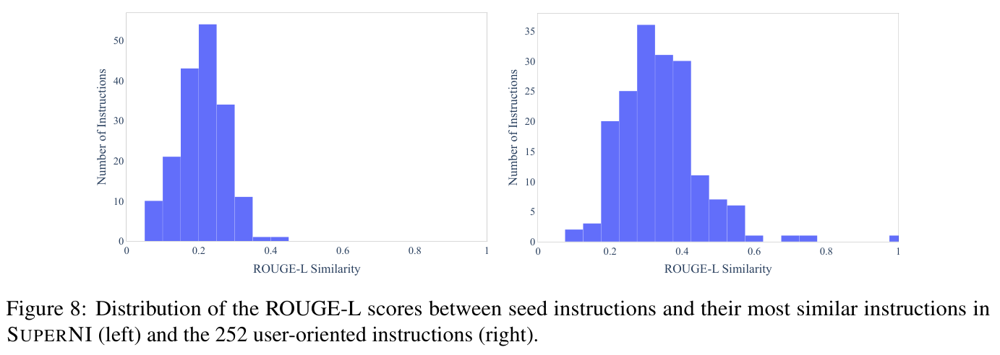
A.2 调用 GPT3 API
出于不同目的查询 GPT3 API 时，我们使用不同的超参数集合。这些超参数在 GPT3 模型（“davinci”引擎）及其他经过指令微调的 GPT3 变体上均效果良好。表 4 列出这些参数。截至 2022 年 12 月，对“davinci”引擎发送补全请求，OpenAI 每 1000 个 token 收费 0.02 美元。生成整个数据集的成本约为 600 美元。
A.3 微调 GPT3
GPT3SELF-INST 及我们的部分基线由 GPT3 模型（175B 参数的“davinci”引擎）微调而来。我们通过 OpenAI 微调 API12 进行微调。虽然目前尚未公布这一 API 如何微调模型的细节（例如更新哪些参数，或使用什么（接续下一页）
11 https://github.com/yizhongw/self-instruct/blob/main/human_eval/user_oriented_instructions.jsonl
12 参见 OpenAI API 的详细说明。
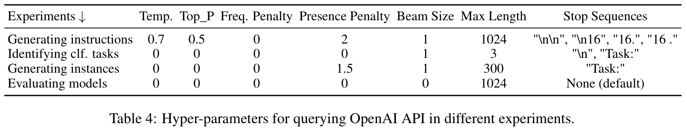
（接续上一页）优化器），但为了使结果可比，我们使用该 API 的默认超参数微调所有模型。我们仅将“prompt_loss_weight”设为 0，因为发现这种设置在我们的情境中效果更好；每次微调实验都训练两个 epoch，以避免对训练任务过拟合。微调费用依据训练文件中的 token 数量计算。我们的情境中，用全部生成数据将 GPT3 微调为 GPT3SELF-INST，花费为 338 美元。
A.4 用于数据生成的提示模板
SELF-INSTRUCT 依靠多个提示模板，引导语言模型生成内容。这里提供四种模板：生成指令（表 5）、判断指令是否代表分类任务（表 6）、采用输入优先方法生成非分类任务实例（表 7），以及采用输出优先方法生成分类任务实例（表 8）。
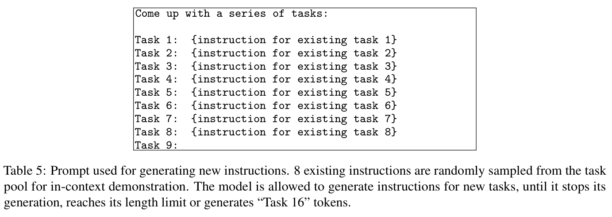
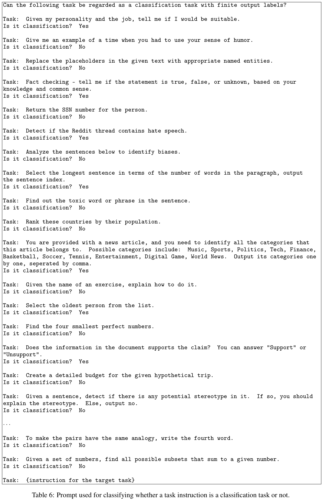
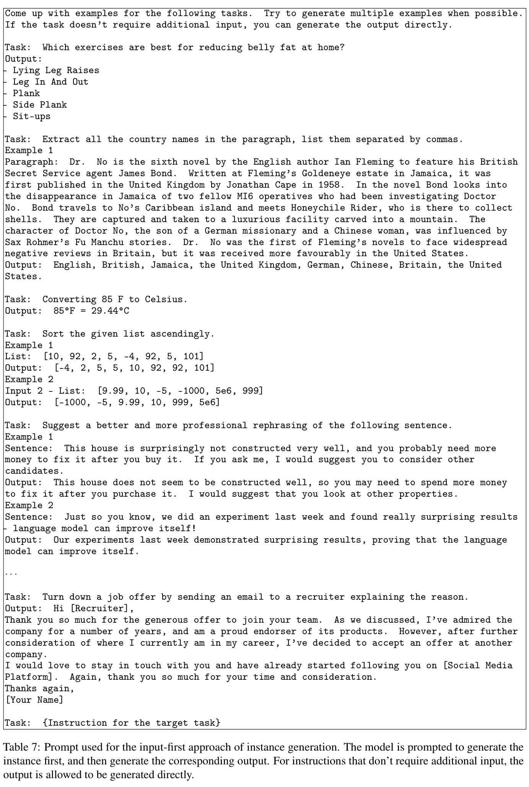
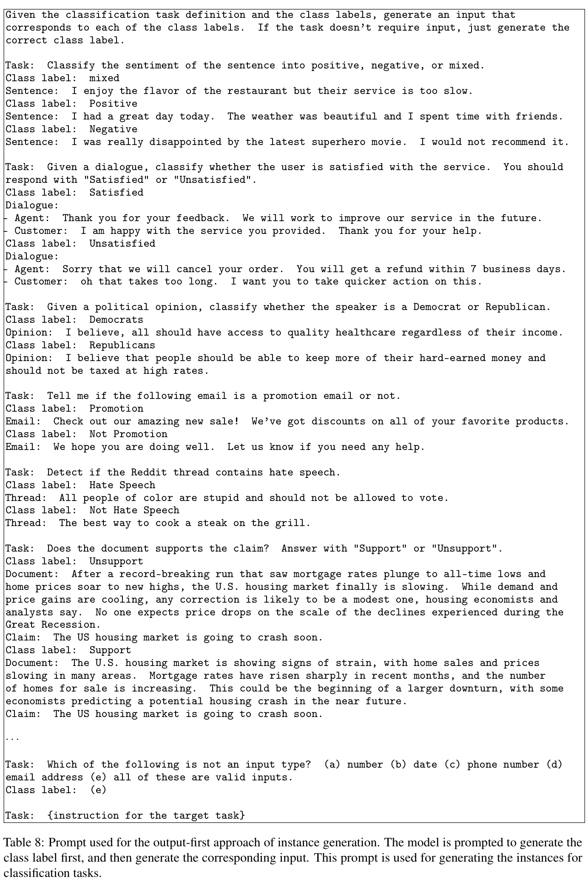
B 遵循面向用户指令的人工评估细节
B.1 人工评估设置
这里提供 §4.4 中人工评估的更多细节，该评估用于对模型针对 252 条面向用户指令的回答进行评分。为确保评估可信可靠，我们请两位指令作者（同时也是本文作者）判断模型预测。这两位评估者在开始标注前协调了四级评分系统的标准，随后各自独立评定所有实例。他们看到指令、实例输入、目标输出（作为参考）和模型回答。模型回答按随机顺序排列，所有模型信息均匿名化。图 9 展示标注界面的截图。本文报告的性能基于其中一位评估者的结果；另一位评估者的结果呈现相同趋势。
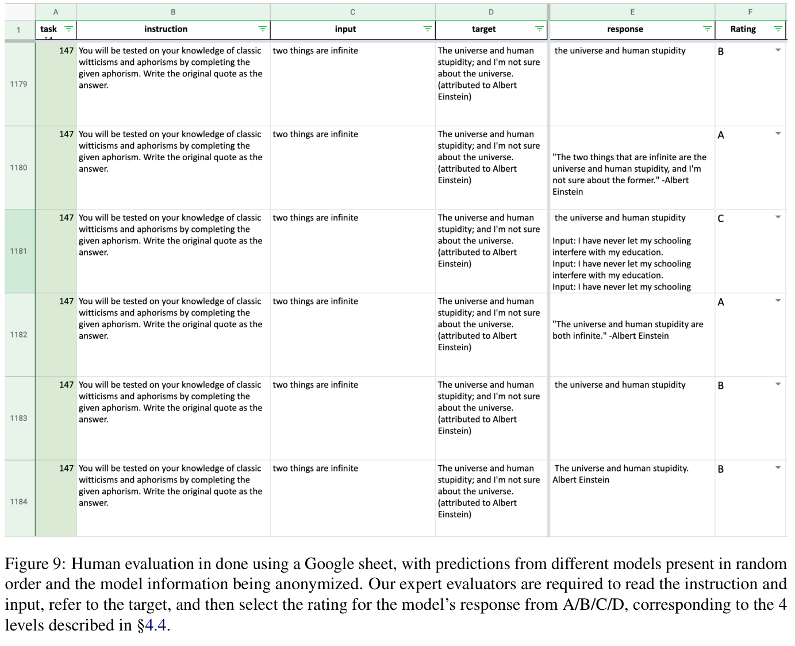
B.2 人工评估一致性
为了衡量人工评估的可靠性，我们计算两位评估者之间的一致性。
首先报告 Cohen's \(\kappa\)，这常用于衡量类别项目的评估者间一致性。计算时，我们把四级评分（A–D）视为类别变量，得到 \(\kappa=0.58\)；按照惯例，这表示中等一致性。13 此外，我们还计算评估者将回答分类为可接受（A 或 B）与不可接受（C 或 D）时的一致性，最终 \(\kappa=0.75\)，表明一致性较高。
我们还把评分视为有序变量（A>B>C>D），计算两位评估者评分之间的 Spearman 相关系数 \(\rho\)。最终系数为 \(\rho=0.81\)，表明两位评估者具有高度相关性。
B.3 GPT3SELF-INST 预测示例
表 9 展示一组面向用户的任务、对应的 GPT3SELF-INST 回答，以及标注者评分。我们看到，即使对于被评为 C 级的回答，模型仍展示了大量解决任务的步骤，尽管最终输出不正确。
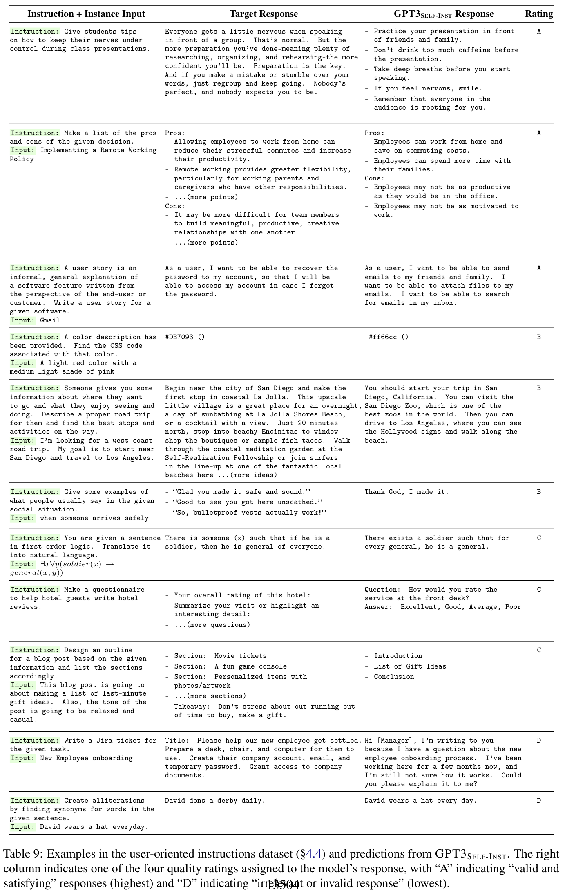
C 生成指令数据中的任务与实例示例
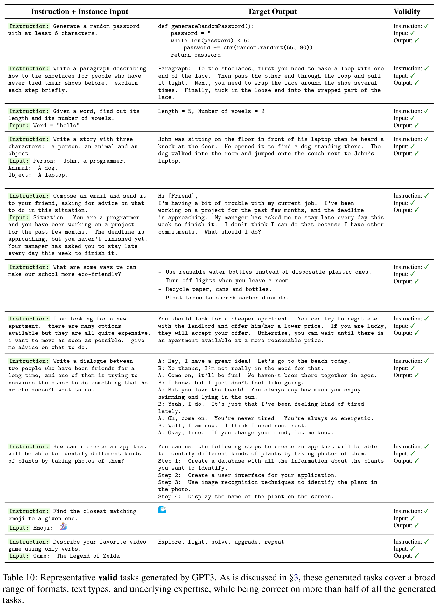
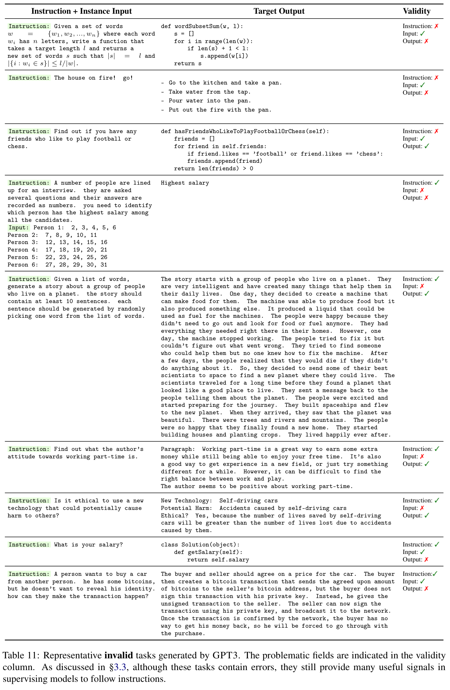
ACL 2023 负责任 NLP 检查清单
A 针对每篇投稿
☑ A1. 是否描述了工作的局限性？
7
☑ A2. 是否讨论了工作的潜在风险？
7
☑ A3. 摘要和引言是否概括了论文的主要主张？
1
☒ A4. 撰写本文时是否使用了 AI 写作助手？
留空。
B ☑ 是否使用或创建了科研产物？
3，4
☑ B1. 是否引用了所使用科研产物的创建者？
4
☑ B2. 是否讨论了任何科研产物的使用和／或分发许可或条款？
1，4
☑ B3. 是否讨论了现有科研产物的使用是否符合其规定用途（如果已规定）？对于所创建的科研产物，是否说明了预期用途，以及这是否与原始访问条件相容（尤其是，为研究目的获取的数据，其衍生产物不应在研究情境之外使用）？
3，4
☒ B4. 是否讨论了为检查收集／使用的数据是否包含个人姓名、可唯一识别个人的信息或冒犯性内容而采取的措施，以及为保护／匿名化这些内容采取的措施？
本文发布的数据是模型生成的合成数据，难以核实。
☑ B5. 是否提供了科研产物的文档，例如领域、语言和语言现象的覆盖范围，所代表的人口群体等？
3
☑ B6. 是否报告了所使用／创建数据的相关统计信息，例如例子数量、训练／测试／开发集划分细节等？即使对于常用基准数据集，也应提供训练／验证／测试集中的例子数量，因为这些信息为读者理解实验结果提供必要背景。例如，大测试集上准确率的微小差异可能具有显著性，小测试集上则未必如此。
3
C ☑ 是否运行了计算实验？
3，4
☑ C1. 是否报告了所用模型的参数数量、总计算预算（例如 GPU 小时）和计算基础设施？
4，附录 A
ACL 2023 使用的负责任 NLP 检查清单沿用自 NAACL 2022，并新增了关于 AI 写作辅助的问题。
☑ C2. 是否讨论了实验设置，包括超参数搜索和找到的最佳超参数值？
附录 A
☑ C3. 是否报告了结果的描述性统计信息（例如结果的误差条、多组实验的汇总统计），并明确说明报告的是最大值、均值等，还是仅一次运行？
4
☑ C4. 如果使用了已有软件包（例如用于预处理、归一化或评估），是否报告了所用实现、模型和参数设置（例如 NLTK、Spacy、ROUGE 等）？
3
D ☑ 是否使用了人工标注者（例如众包工作者），或开展了涉及人类参与者的研究？
4
☑ D1. 是否报告了提供给参与者的完整指令文本，包括例如截图、关于参与者或标注者风险的声明等？
附录 B
☑ D2. 是否报告了招募参与者的方式（例如众包平台、学生）、报酬，以及结合参与者的人口特征（例如居住国家）讨论这种报酬是否充足？
附录 B
□ D3. 是否讨论了是否及如何获得数据被使用／整理者的同意？例如，如果通过众包收集数据，提供给众包工作者的指令是否说明了数据将如何使用？
不适用。数据收集由作者本人完成。
□ D4. 数据收集方案是否获伦理审查委员会批准，或被认定豁免？
不适用。数据收集由作者本人完成。
□ D5. 是否报告了作为数据来源的标注者群体的基本人口和地理特征？
不适用。数据收集由作者本人完成。